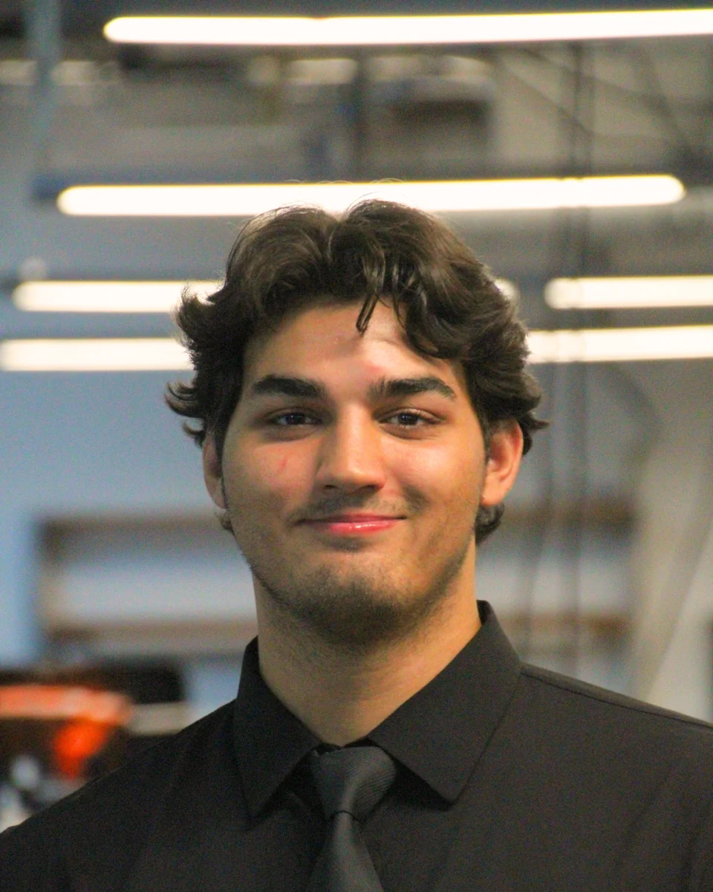
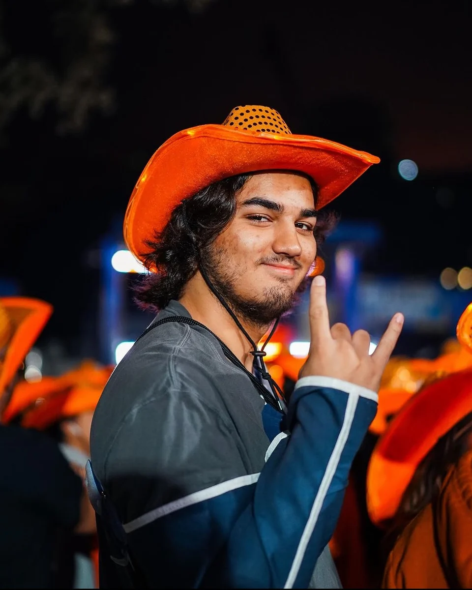
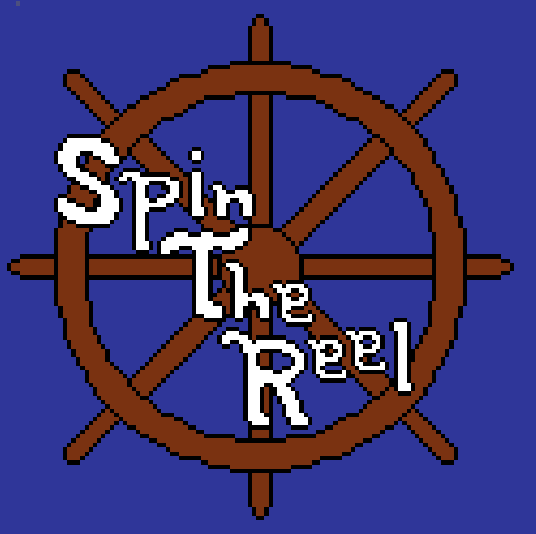
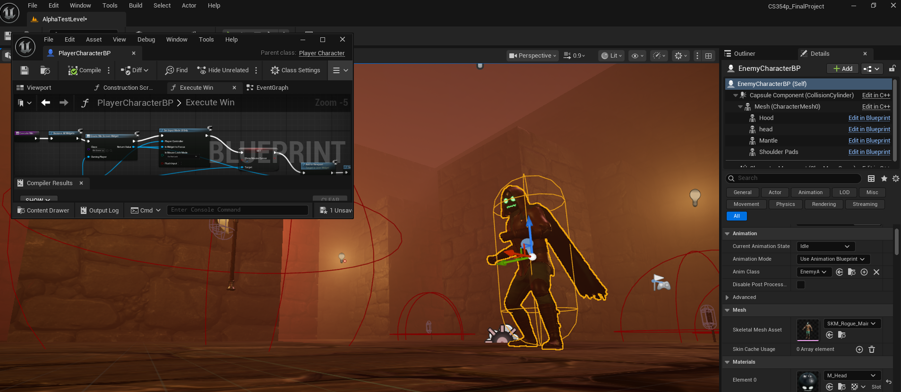
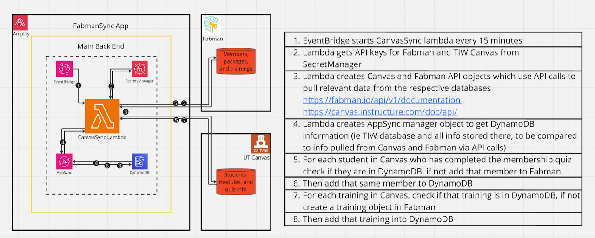
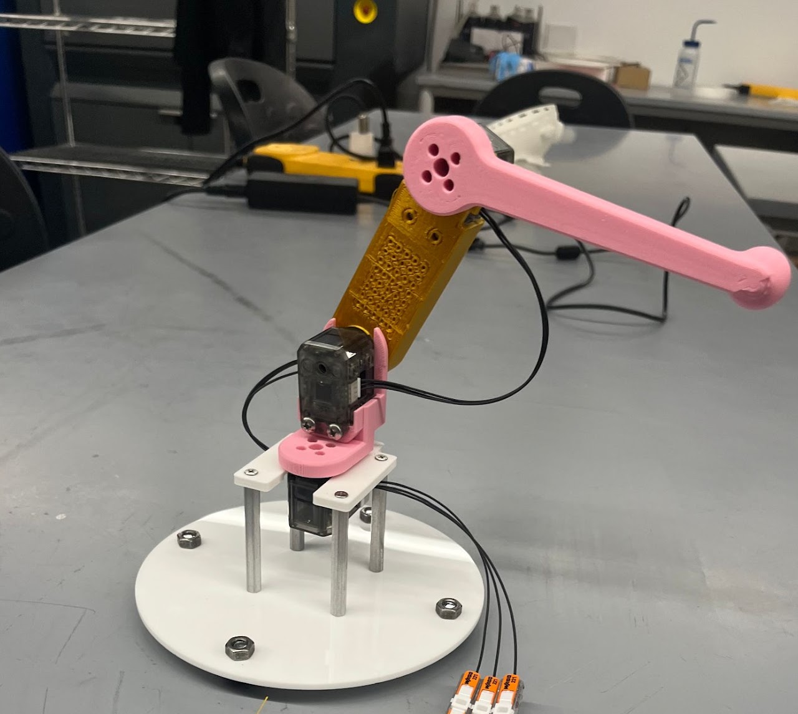
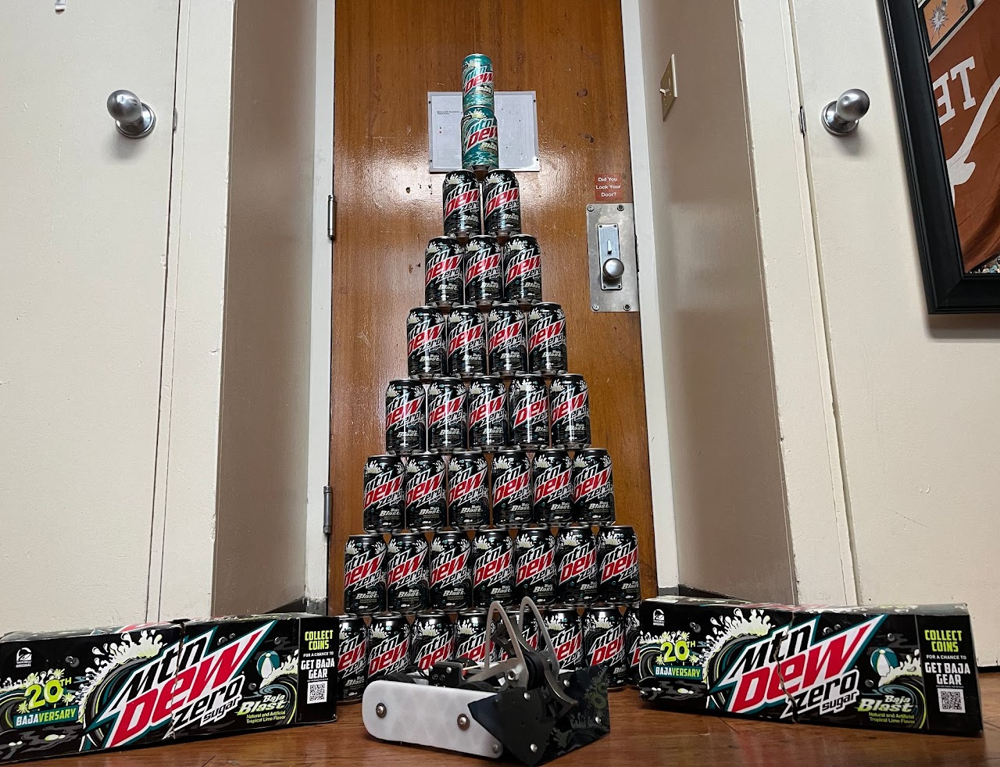

Computer Science / UT Austin
Harrison Floyd
I build games, systems,
and things that move.
A Senior Computer Science student at The University of Texas at Austin, building interactive systems across game engines, cloud infrastructure, and hardware.


Selected work
A few things I've built.

Unreal Engine · In development
Spin the Reel
A fishing roguelite where every cast is a gamble.

Godot · Game jam
Freeze the Devil
Travel through time. Set the chain reaction. Refreeze hell.

Unreal Engine · Experiments
Smaller Unreal Projects
Momentum-based combat, collaborative AI, and networked hordes.

Cloud · Texas Inventionworks
AWS Infrastructure
Training records to equipment access, synced automatically.

Robotics · UT Austin
Robotics Coursework
Turning a target position into real-world robot motion.

Hardware · Robo Rumble
Combat Robotics
The Baja Bunny: three pounds of vertical-spinning chaos.
Showing all 6 projects.